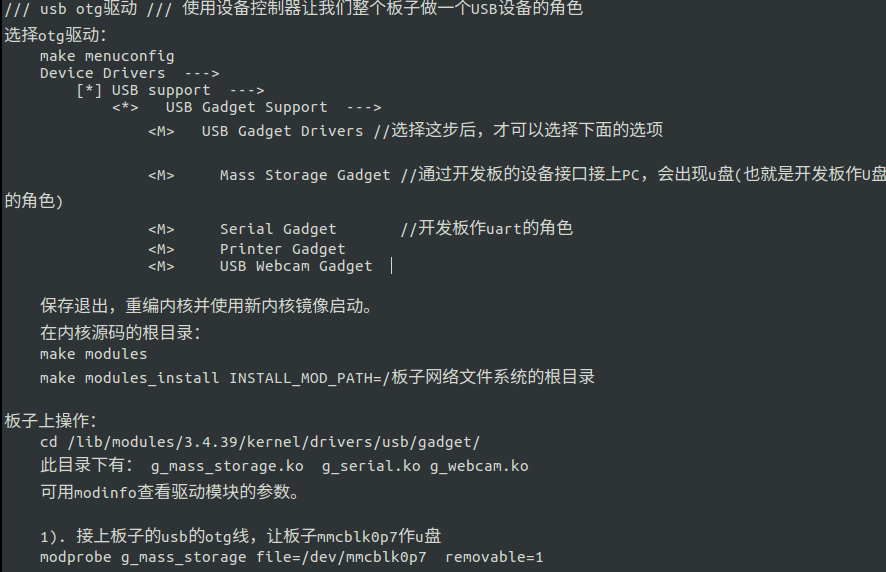

OTG口在Linux的使用(H3)
不多说。。。直接上图。。

还是多说几下好了。。。
上面编译后一般还要替换内核，建议uname -r看原来内核版本以及查看内核源码根目录下的makefile来判断内核版本是否相同，实际上还是建议更换内核，如果需要，还得执行编make uImage或者make zImage以编译出来uImage或者Image(一般是zImage)，在电脑上编译可能还需要配置交叉编译器加ARCH=arm CROSSCOMPILE=arm-linux-gnueabihf-之类的参数，或者有编译脚本也行，根据编译出来的内核格式如果和原来不一样的话还有可能需要更换bootcmd，看原来的格式是否相同判断，官方系统内在BOOT分区，一般挂载在media/boot内核是uImge格式，armbian在/boot，是zImage格式。其他系统建议先看分区分布来判断。还有内核模块在/lib/modules，上面INSTALL_MOD_PATH=可以替换本机地址，在板子上可以是INSTALL_MOD_PATH=/ ，电脑上交叉编译请找个文件夹来配置到这个文件夹进行输出内核模块，输出后有个lib目录，拷贝到板子根目录覆盖即可，觉得要把原来的删掉才爽的人可以去/lib/modules里面把原来的删掉/备份起来。
打开serial串口模式在opi以便直接连micro usb口调试
在上面的条件下
先
mkdir -p /etc/systemd/system/serial-getty@ttyGS0.service.d
然后
sudo nano /etc/systemd/system/serial-getty@ttyGS0.service.d/10-switch-role.conf
加入
[Service]
ExecStartPre=-/bin/sh -c "echo 2 > /sys/bus/platform/devices/sunxi_usb_udc/otg_role"
用Ctrl-O回车保存，Ctrl-X键退出。。（其他文本编辑器自便）
最后
sudo systemctl --no-reload enable serial-getty@ttyGS0.service
sudo echo "ttyGS0" >> $SDCARD/etc/securetty
还不行加载模块
sudo modprobe g_serial
sudo echo g_serial >> /etc/modules
再转发摘录一处OTG做网卡的文章
摘录自http://blog.csdn.net/jklinux/article/details/72724054 jklinux
两篇文章互相参考下也是可以的。。我的文章少了<M> Ethernet Gadget (with CDC Ethernet support)这个网络模块。
板子没有有线网卡， 但有提供otg接口, 可以让我们的板子作个虚拟网卡通过usb线接到pc, 在pc上就会多产生一个网络设备。然后pc就可以通过产生的网络设备与板子通信了, 板子也可以通过网络挂载pc上的共享目录.
1). 配置内核，让内核支持此功能.
在原内核配置上，多配的内容:
在内核源码根目录下:
make menuconfig ARCH=arm CROSS_COMPILE=arm-linux-gnueabihf-
File systems --->
[*] Network File Systems --->
[*] NFS client support for NFS version 3
//NFS支持看需要啦。
[*] NFS client support for NFS version 4
Device Drivers --->
[*] USB support --->
<*> USB Gadget Support --->
<M> USB Gadget Drivers //修改成'M'，原来是'*'
<M> Ethernet Gadget (with CDC Ethernet support)
修改好后，退出保存。再编译内核\(注意不用"make clean"\)
make uImage ARCH=arm CROSS_COMPILE=arm-linux-gnueabihf-
再编译驱动模块\(也就是选'M'项\)
make modules ARCH=arm CROSS_COMPILE=arm-linux-gnueabihf-
2). 更新内核镜像及文件系统
把板上的SD卡用读卡器接PC上后, 正常情况下会自动把分区挂载到一个目录\(如没有则手动挂载\)
我的挂载状况:
/dev/sdb1 on /run/media/root/104A-F304
/dev/sdb2 on /run/media/root/linux
cp arch/arm/boot/uImage /run/media/root/104A-F304 //更新内核镜像
make modules_install INSTALL_MOD_PATH=/run/media/root/linux/ //把编译生成的模块驱动.ko文件放到文件系统的分区里
make modules_install INSTALL_MOD_PATH=/disk3/h3fs/ //也给PC上的板子文件系统更新，以防SD卡系统挂掉后可以恢复
以上操作完成后， 反挂载后把SD卡接回板子上启动系统.
3).
板子系统启动进入文件系统后， 我们要用的驱动文件就是"/lib/modules/3.4.112/kernel/drivers/usb/gadget/g\_ether.ko"
板子端的操作\(要root权限\):
depmod -a //重新链接内核模块描述文件
modprobe g_ether //加载刚才的ko驱动文件
echo 2 > /sys/devices/platform/sunxi_usb_udc/otg_role //让板子的otg接口作设备用.
//上两步操作完成后， 板子端会多usb0网络设备
接入usb线后，pc端也会多一个网络设备\(名字不确定的，我的是enp0s29f7u1\)
最后把两端的网络设备设好IP，即可网络通信:
ifconfig usb0 192.168.11.10 //设置板子端的IP
ifconfig enp0s29f7u1 192.168.11.20 //设置PC端的IP
设好即可ping通，也就可以在板子上挂载pc的nfs共享目录.如我pc上nfs共享目录"/disk3/share",则在板子上:
mount 192.168.11.20:/disk3/share /mnt -o nolock